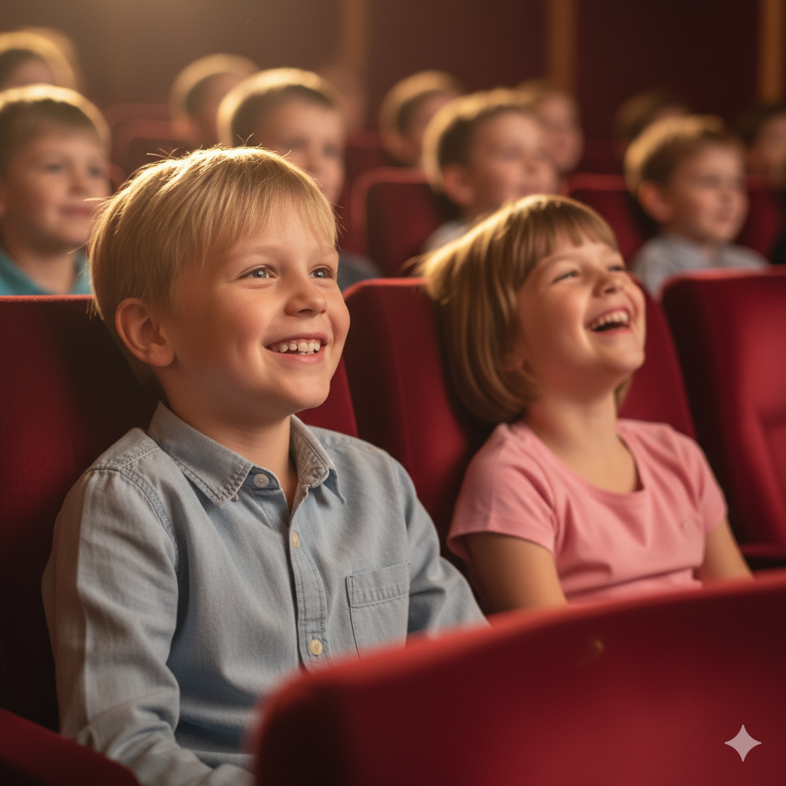
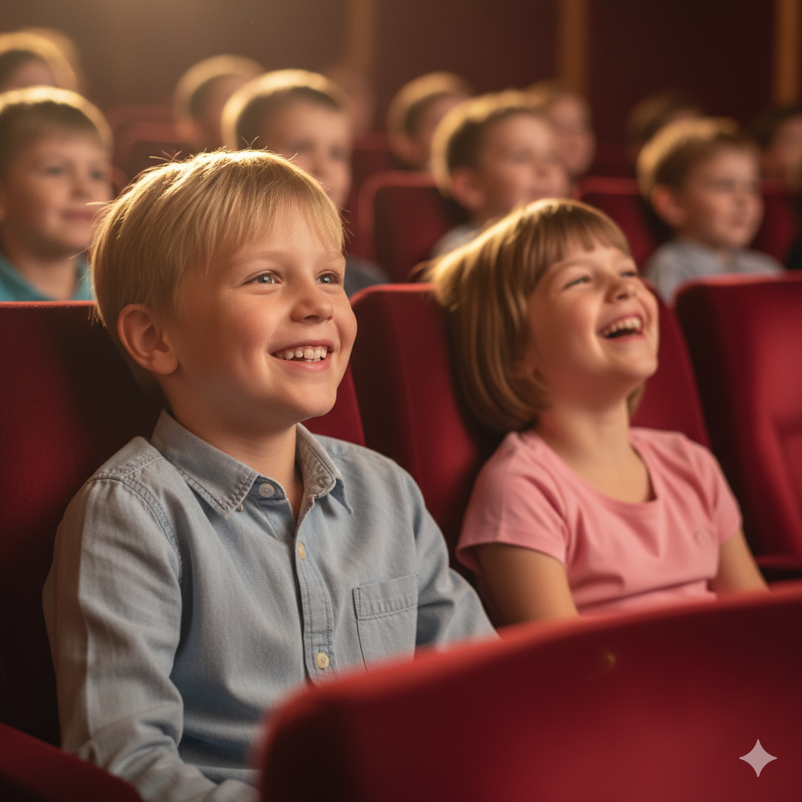

Hvem passer forestillingen til?
- Børn fra 6 år
- Familier, der elsker nordisk fortælling
- Forældre og bedsteforældre

12. februar 2025
Musikhuset Esbjerg
For børn fra 6 år
Billetter kun 80 kr
En stille, rørende og håbefuld fortælling om mod, kærlighed og sammenhold.
Perfekt til familier, der ønsker et roligt øjeblik sammen midt
i
vinterferien
12. februar 2026
Musik Huset
Esbjerg
“Jeg læste Brødrene Løvehjerte som barn – nu glæder jeg mig til at dele historien med mine egne børn.”
Anna (mor)
“Vi glæder os til en oplevelse, vi kan tale om sammen bagefter.”
Gordon (far)
“Jeg læste historien for min søn engang. Nu skal mine børnebørn også høre den.”
Ida-Maria (bestemor)
SkarnTyden er Esbjergs ældste amatørteater - dedikeret til at skabe nærværende og hjertevarme forestillinger for lokalsamfundet.
Læs mere
 
